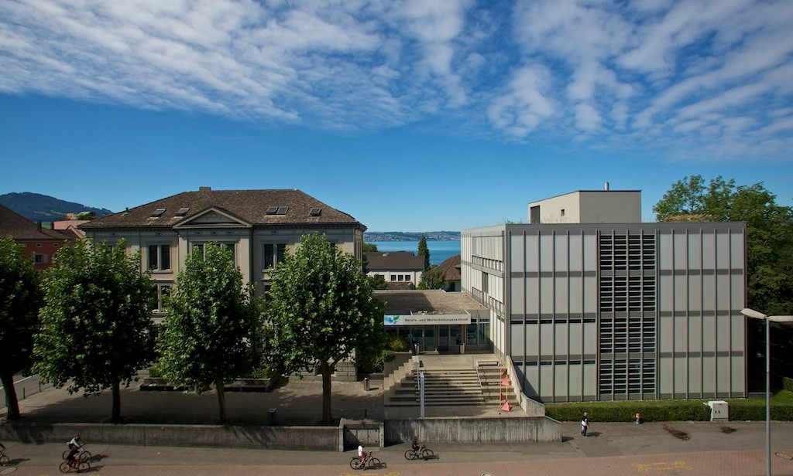

IMS - Informatikmittelschule
Berufs- und Weiterbildungszentrum Rapperswil-Jona

Schule
Das BWZ Rapperswil-Jona
Das Beruf- und Weiterbildungszentrum in Rapperswil ist seit 2002 eine offizielle Bildungsinstution. Es hat den Standort im Zentrum von Rapperswil und ist etwa 10 Minuten Fussweg vom Bahnhof entfernt. Im BWZ Rappi kann man den Berufsschulunterricht, Berufsmaturitätsunterrricht und auch vollständige Ausbildungen wie die Informatikmittelschule geniessen. Es ist unterteilt in 4 Häuser mit verschiedenen Zimmern. Die Zimmer sind nummeriert mit der ersten Ziffer nach Haus, die zweite Ziffer nach Etage und die dritte Ziffer nach Raum und diese von 1-6 von links nach rechts aus Sicht des Treppenhauses.
